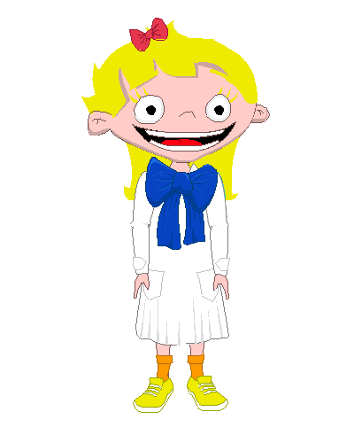

Las defensas del cuerpo forman una barrera protectora, que mantiene alejadas muchas enfermedades.
La alimentación adecuada previene muchas enfermedades importantes. Cuando no tenemos una buena alimentación, nuestras defensas, es decir, el sistema inmune (uno de los sistemas de nuestro organismo), se verá afectado.

El ejercicio, el disfrute del tiempo libre, el estar con amigos, el reír, el estar con la familia, el estar de buen humor, también favorecen que nuestro sistema inmune no se vea afectado. Las vacunas también ayudan a que nuestras defensas protejan nuestro organismo. Todas las personas tienen derecho a recibir gratis las vacunas que figuran en el calendario de vacunación.